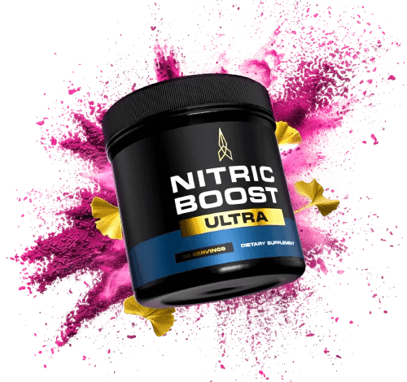
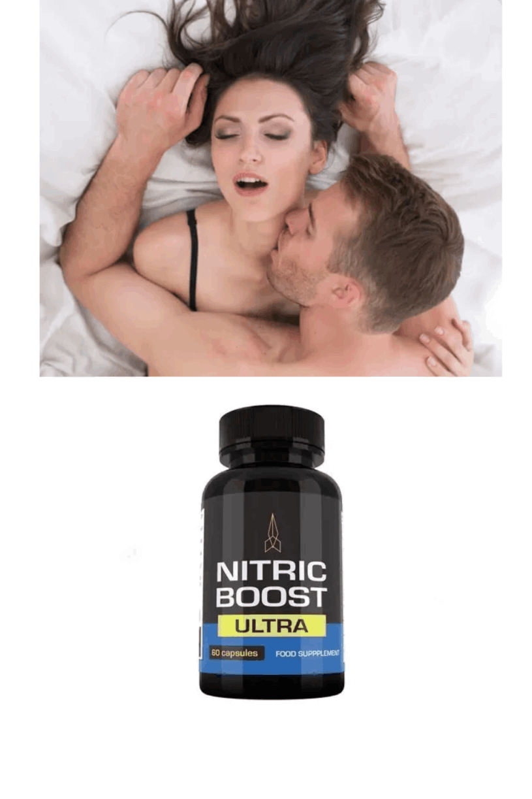
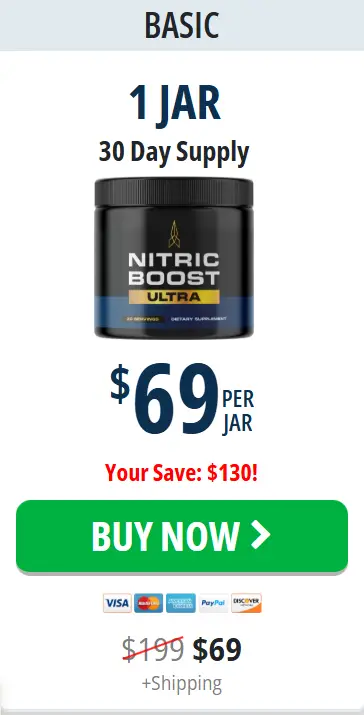
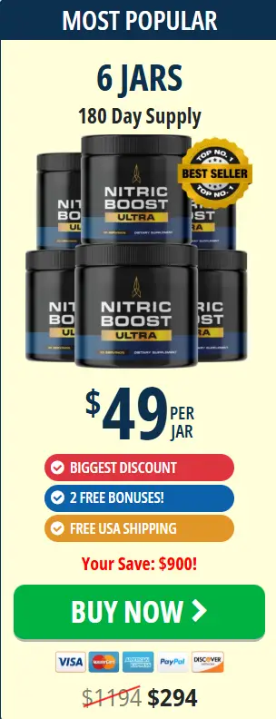
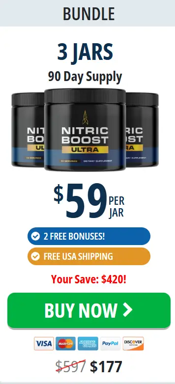
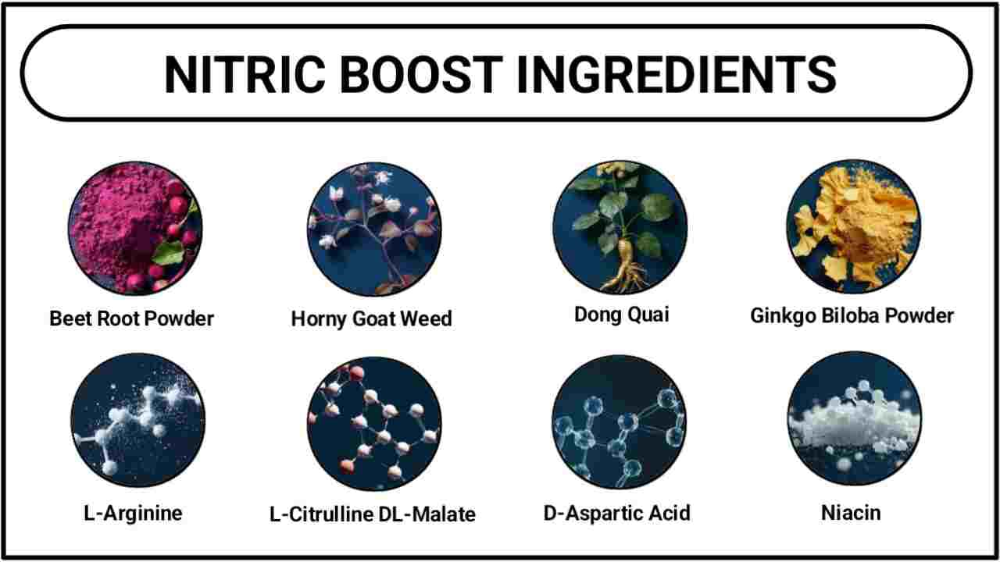
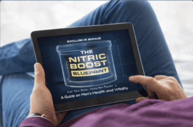

based on 75,651 reviews!
Flash Sale ONLY For Today - Special Offer
75% Off Today + 2 Free Bonuses + Free Shipping
Nitric Boost Ultra is an advanced nitric oxide support formula designed to help boost energy, endurance, and healthy blood flow, naturally. Made with carefully selected natural ingredients, this powerful blend supports the body’s ability to produce nitric oxide, helping improve circulation, stamina, and overall vitality. Crafted in the USA in GMP-certified facilities, Nitric Boost Ultra delivers clean, dependable support without harsh stimulants. With consistent daily use, many users notice increased energy, better performance, and a renewed sense of confidence, making it an ideal choice for long-term vitality support.
✅ Boosts Energy & Endurance
✅ Supports Healthy Blood Flow
✅ Enhances Workout Performance
✅ Natural & Clean Formula

based on 75,651 reviews!
“Got tired of juggling different men’s supplements, so Nitric Boost Ultra caught my attention. I like the simple powder format and the combination of L-arginine, L-citrulline, and beet root. Easy addition to my routine so far. #NitricOxide”
“I started looking into Nitric Boost Ultra because I wanted something straightforward for supporting circulation and everyday performance without making my routine complicated. What impressed me most was the formula. It includes L-arginine, L-citrulline, and beet root, ingredients that make sense in a product focused on nitric oxide support.

Nitric Boost Ultra™ is proudly manufactured in the United States using premium quality raw ingredients.

Every scoop contains only natural, plant-based ingredients with no chemicals, fillers, or artificial stimulants.

Production takes place in a facility registered with the FDA to ensure compliance with health and safety standards.
Nitric Boost Ultra is marketed as a men's dietary supplement intended to support nitric oxide production, circulation, physical stamina and general vitality. The sales page describes a formula containing eight ingredients and presents the product in a powder-style container. Product formats, label details and offer pages can vary across websites, so confirm the exact format and serving instructions on the page linked from your checkout before paying.
Nitric oxide is a signalling molecule naturally produced by the body. Among its roles, it helps blood vessels relax, a process known as vasodilation. Because blood flow is involved in exercise performance and erectile function, nitric-oxide-related ingredients are often used in sports and men's wellness supplements.
That biological explanation is not the same as proof that a supplement will produce a noticeable benefit for every person. The dose, ingredient quality, overall formula, a person's health, and the cause of any symptoms all matter. Nitric Boost is a supplement, not a prescription medicine or a substitute for a medical assessment.

Nitric Boost works by enhancing your body’s natural production of Nitric Oxide (NO), a critical molecule that supports various aspects of male health. NO helps relax and expand blood vessels, which improves blood flow and plays an essential role in achieving and maintaining a firm, long-lasting erection. This process also contributes to better overall cardiovascular health.
The formula of Nitric Boost includes ingredients that are specifically chosen to support the production of NO. These ingredients include a concentrated source of nitrates, which convert into Nitric Oxide, and key amino acids that help maintain steady levels of NO in the body. Additionally, it features natural antioxidants that enhance nitric oxide synthase, the enzyme responsible for NO production, promoting better blood vessel health and overall circulation.
Beyond circulation, Nitric Boost may help improve mental clarity, reduce inflammation, and support hormonal balance. By increasing NO levels, it helps boost energy, stamina, and endurance, contributing to a more balanced and active lifestyle. The carefully selected ingredients work synergistically to promote male health, supporting both physical and mental well-being.
● Uses all-natural and organic ingredients
● Supports healthy blood circulation
● Improves vitality and energy level
● Boosts erection and testosterone level
● Provides 180-day money-back guarantee
● non-GMOs and vegan-friendly
● FDA-approved and GMP-certified
● Can sell out quickly (limited availability).
● Only available via official website or select stores.




Secure Your Nitric Boost Ultra While Stocks Last


Regular Price: $73.50 – Today: FREE
This comprehensive manual provides powerful tips to help you get the most out of Nitric Boost. It covers the optimal times for taking the supplement to maximize absorption, food pairings that complement its effects, and tasty smoothie recipes to integrate with the powder. This guide ensures you’re using Nitric Boost effectively for your fitness goals.

BONUS #2: Regular Price: $73.50 – Today:
FREE
This guide is your ultimate resource for enhancing sexual endurance and performance. Learn proven techniques to boost stamina and control, tips to improve confidence, and easy hacks for prolonging your energy levels. It’s an invaluable tool for those looking to take their performance to the next level, with simple and practical advice.
Yes! Nitric Boost Ultra is marketed as a natural, stimulant-free dietary supplement for adult men, but its suitability depends on the ingredients, dosages, and individual health circumstances. The seller states that it is made in a U.S. facility following GMP-related standards.
Thousands of verified users from the U.S., U.K., Canada, and Australia have used Nitric Boost Ultra with no serious complaints or health risks reported. The few minor side effects (e.g., mild bloating or flushing) usually resolve quickly as the body adjusts.
Our editorial team gave Nitric Boost a 9.8 out of 10 after weighing the ingredient profile, brand transparency, and customer experience. The formula reflects a balanced approach that many supplement shoppers will appreciate.
If you have been on the fence, the official 60 day refund policy makes it easier to try Nitric Boost with less financial risk. Just be sure to order directly from the manufacturer to avoid counterfeit listings.

Dosage: 1 scoop daily
Timing: 30–60 minutes before workouts, sports, or sexual activity
Mixing: Blend with water or juice for quick absorption
Stomach Condition: Take on a light stomach for better uptake
Hydration: Drink plenty of water to maximize nitric oxide effects

The Nitric Boost Ultra is backed by a 100% money back guarantee for 60 full days from your original purchase.
If you're not totally and completely satisfied with the Nitric Boost Ultra or your experience in the first 60 days from your purchase simply let us know at Nitric Boost Ultra and we'll give you a refund within 48 hours of the product being returned.
That's right, simply return the Nitric Boost Ultra anytime within 60 days of your purchase and you'll receive a refund, no questions asked!
Once you have clicked the Nitric Boost Ultra “Buy Now” button that is right below this text, you will be taken to the secure checkout page. Just enter your information, and you will then be given instant access to the entire Nitric Boost Ultra.

It is marketed as a dietary supplement for men's circulation, stamina, energy and performance. These are marketing purposes, not proof that it treats a medical condition or will deliver those outcomes for every user.
The seller's page lists beet root powder, L-arginine, L-citrulline DL-malate, horny goat weed, ginkgo biloba, dong quai, D-aspartic acid and niacin (vitamin B3). Confirm the current label and amounts before using it.
Yes. Every purchase of Nitric Boost includes a full 60-day money-back guarantee. If you're unsatisfied with results or experience any issues, simply contact customer service for a complete refund — no return shipping required and no questions asked. This guarantee applies to all bottle counts and pack options.
Yes. Nitric Boost is formulated with clinically researched ingredients in doses supported by published scientific evidence. The manufacturer operates a GMP-certified facility meeting pharmaceutical-grade standards. Adverse event reports across 18,600+ verified users remain below 2%, with most side effects being mild and transient (minor GI adjustment in first week). The 60-day money-back guarantee removes financial risk.
Yes. Nitric Boost is designed for men aged 30 and above, and it's particularly beneficial for men over 50, as nitric oxide production declines naturally with age. Men in this age group typically report the most significant circulation and endurance improvements. As always, consult your healthcare provider if you take blood pressure or cardiovascular medications to ensure compatibility.

AI Website Generator